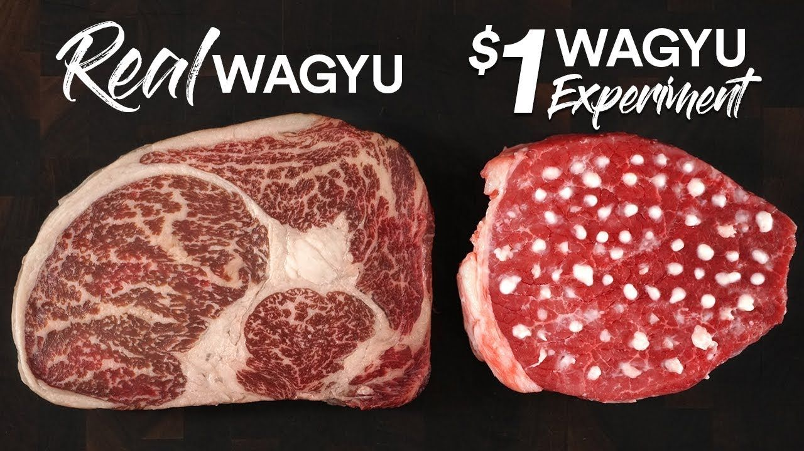

Money Steak

This recipe is how to properly buy a steak. Steak is best served professionally
Wagyu - a Japanese beef cattle breed – derived from native Asian cattle. 'Wagyu' refers to all Japanese beef cattle, where 'Wa' means Japanese and 'gyu' means cow.
Wagyu were originally draft animals used in agriculture, and were selected for their physical endurance. This
selection favored animals with more intra-muscular fat cells marbling which provided a readily
available energy source. Wagyu are naturally horned and can be either black or red in color.
Ingredients
- Money
- More Money (additional)
Step by Step
- Start by googling best places near you serving wagyu A5. Authentic A5 wagyu is hard to come by, be aware some resturants will falsely state the steak they are serving are wagyu. Althought it may be wagyu it's probably low grade
- Drop your credit card/debit card and wait within the researched resturant
- Although there are videos on how to properly cook A5 wagyu, you would rather have someone professional handle your steak that could cost anywhere from 250 and up.
Other recipes